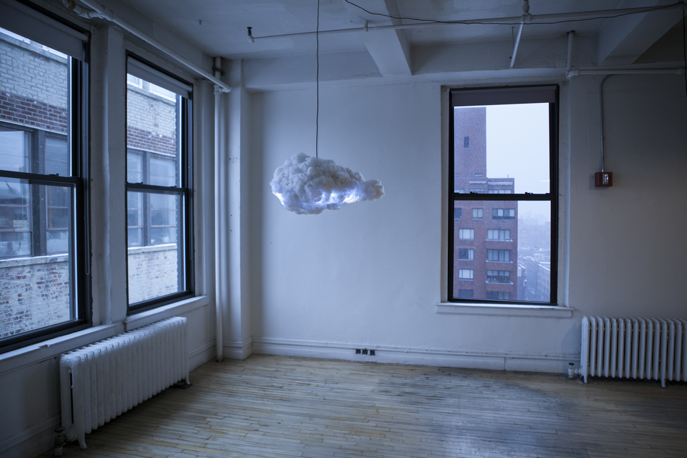

Phillipp Perez Heil and Leo Reschetko
We are students at the DHBW Kalrsruhe and work on a project for the course "Software Engineering".
| Date | Version | Description | Author |
|---|---|---|---|
| 20.05.2015 | Version 1.0 | Created document | Philipp Perez Heil |
‘CLOUD’ is a projekt consisting of a webapplication and a lamp in shape of a cloud. The webapplication offers the upload of songs, the creation of playlists and events and the playback of music. Moreover, people can register/login in the webapplication and vote for songs of the current playlist. The song with the most votes will be played next using the attached sound system in the lamp. A micro controller enables the lightning of the lamp which will have different modes such as a sound reactive and a pulsating light mode.
We, the three students: Leo, Tobias and Philipp created the project ‘CLOUD’. The inspiration came from the homonymous intention of an US-American designer Richard Clarkson. Our goal is to take his concept and improve it on it’s technical features.
The projekt of R. Clarkson implies a cloud-like lamp with a micro controller, LEDs and a sound system. The controller is used for communication and control of the LEDs, which ‘blink with the beat’. His cloud can be handeled with a remote control. The extra feature is – by activating the motion sensor, the lamp plays thunder sounds and blinks to them.
We want to extend our cloud with creating a website with the option to upload more music. The order in the music lists will be manipulated by the votes of users. The song with the most votes will be played next. Therefore the microcontroller (in the lamp) will be connected through WIFI with a server and it will control the LEDs plus the 2.1 soundsystem. The scheduled time for our project is set to about 6 months, which will be the next two theory phases. The material costs will come to an ammount of > 200€. More informations about the planned soft- and hardware etc. is listed below. All specifications are temporary and the can be changed during the project period.
Team members of the project CLOUD: